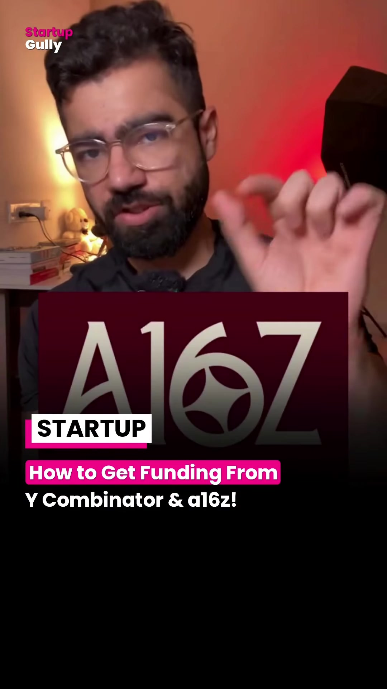
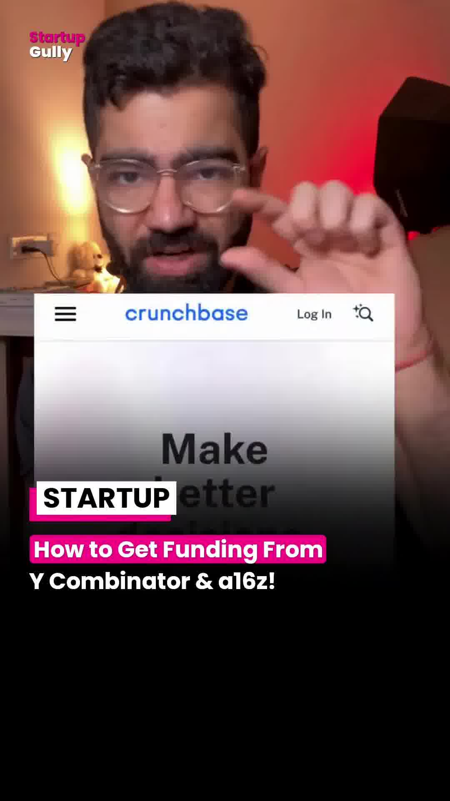
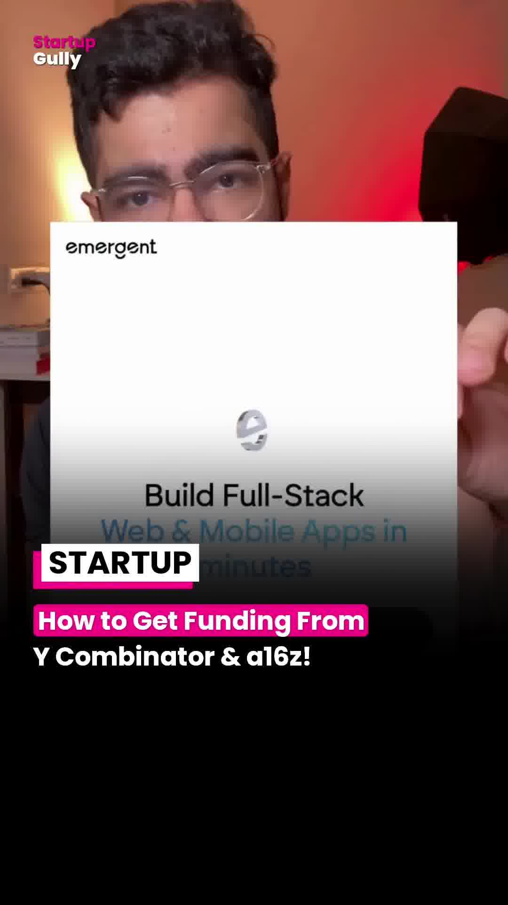
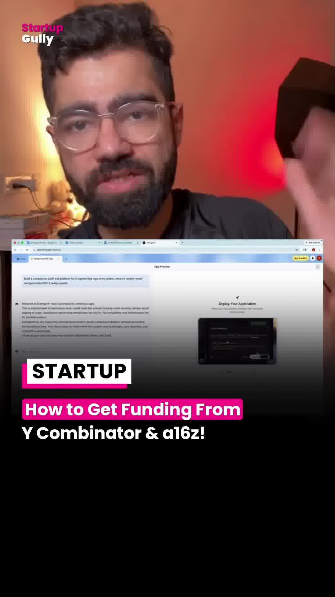

Executive Summary
First-time founders frequently waste months brainstorming consumer concepts in oversaturated niches, struggling to capture investor attention. However, top-tier venture firms like Y Combinator (YC) and Andreessen Horowitz (a16z) publicly document the exact macroeconomic problems, engineering bottlenecks, and market categories they are actively allocating capital toward.
The VC Wishlist Playbook reverses the traditional fundraising cycle: instead of building a speculative prototype and searching for investor thesis alignment, founders build directly against pre-published partner theses, de-risking both market demand and seed capital availability.
Visual Documentation & Methodology




The 5-Step VC Wishlist Framework
| Step | Operational Phase | Key Actions & Tactical Deliverables |
|---|---|---|
| 1 | Pick a Pre-Funded Problem | Browse official publications: YC Requests for Startups (RFS), a16z Big Ideas, and Sequoia Arc Theses. Filter for B2B infrastructure, developer tooling, climate tech, or autonomous vertical agents where partners have declared high conviction. |
| 2 | Crunchbase Gap Analysis | Search Crunchbase for recent Seed and Series A rounds in that exact category. Identify incumbent pricing models, feature gaps, and negative customer reviews on G2/Capterra to define your wedge. |
| 3 | Rapid Functional MVP | Build a working functional prototype in 7–14 days. Avoid multi-month engineering cycles; focus exclusively on the single core utility that proves the thesis (e.g. automated SOC2 compliance logging for AI agents). |
| 4 | Distribution & Initial Traction | Launch publicly on X/Twitter, LinkedIn, Hacker News, and Product Hunt. Secure 3–5 design partner pilots or your first paid customer to prove willingness to pay before approaching investors. |
| 5 | Targeted Thesis Pitch | Reach out directly to the specific partners who authored the RFS or thesis memo. Lead with: "We read your thesis on [Topic] and built a production prototype that solves [Friction Point]. Here is live user data from our first 5 business pilots." |
Strategic Investor Outreach Architecture
┌─────────────────────────────────────────────────────────────┐
│ Step 1: Ingest Public Thesis │
│ - Y Combinator: Requests for Startups (RFS) │
│ - a16z: Annual "Big Ideas" Whitepapers │
└──────────────────────────────┬──────────────────────────────┘
│
▼
┌─────────────────────────────────────────────────────────────┐
│ Step 2: Competitive Scouting │
│ - Crunchbase / PitchBook funding rounds │
│ - Isolate unaddressed customer segments & price points │
└──────────────────────────────┬──────────────────────────────┘
│
▼
┌─────────────────────────────────────────────────────────────┐
│ Step 3: Rapid Prototype Sprint │
│ - 14-day build cycle for core technical wedge │
│ - Deploy production URL with live authentication │
└──────────────────────────────┬──────────────────────────────┘
│
▼
┌─────────────────────────────────────────────────────────────┐
│ Step 4: Design Partner Pilots │
│ - Close 3-5 pilot contracts with real usage telemetry │
└──────────────────────────────┬──────────────────────────────┘
│
▼
┌─────────────────────────────────────────────────────────────┐
│ Step 5: High-Conviction Pitch │
│ - Target thesis author directly with empirical proof │
└─────────────────────────────────────────────────────────────┘Key Takeaways for Founders
- Invert the Risk Curve: VCs write thesis memos after months of market research. Building what they already want to fund eliminates 90% of pitch resistance.
- Traction Trumps Credentials: Showing working software with live paying pilots speaks louder than pedigree or academic credentials.
- Cite the Thesis Explicitly: When applying to YC or cold-emailing partners, explicitly reference their RFS prompt in line one to instantly bypass junior associate filters.